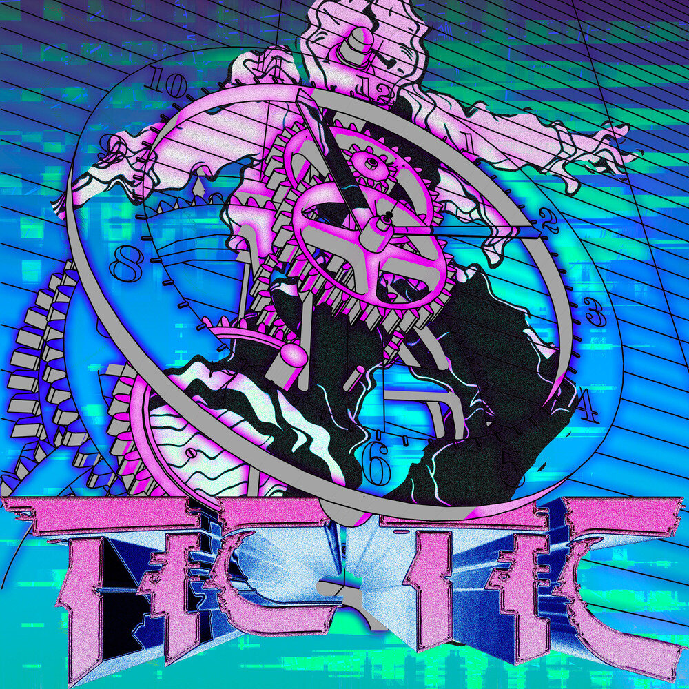

进军南美的四人男团企划。暂定名 SOBREMESA，关键词 UNSPOKEN：语言不完全相通，一起吃饭就是一家人。
小组开会确定19 页 · 20 分钟。补齐世界观·音乐·专辑·MV·游戏/SNS 初稿，并标注已有依据 / 提案 / 需要资料
整理于 2026-10-16将 JYP 企业分析报告的 7 条洞察对应到 SOBREMESA 企划，含 KPI
设定表待制作ACE · ABK · 시골 · 반전 的设定、对比搭档、设定表构成与脸部制作规则

已完成 2026-10-16喜欢的歌曲·MV·专辑设计 → 制作名单 → 概念·差异化要点
最后更新 2026-10-16 · 课程发表用引用资料，禁止转载图片原件